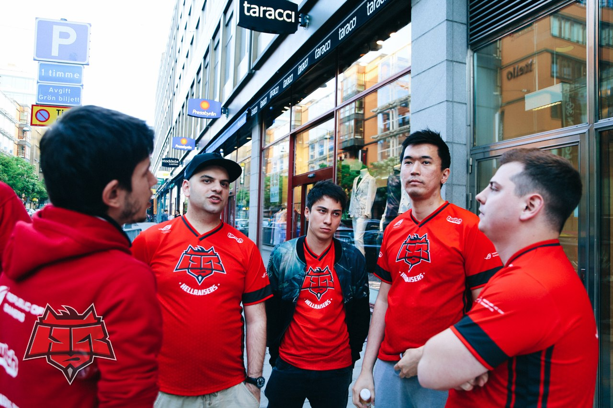
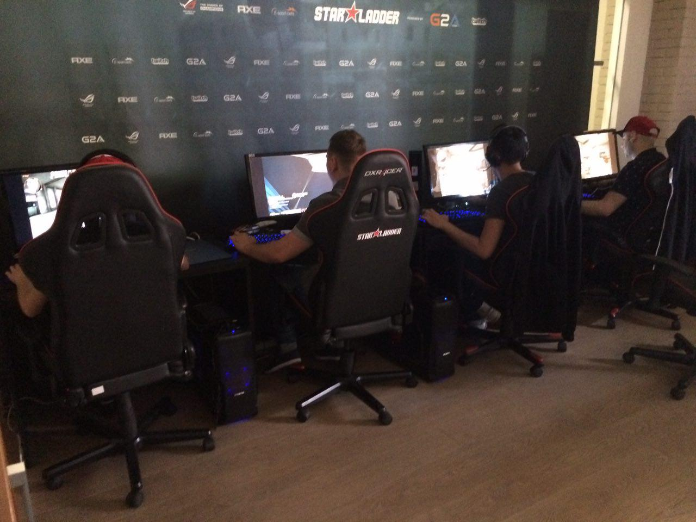

So, it is July 14 of 2015, 5:24 am in Kiev. The Linkin Park – Roads Untraveled song is in my headset.
Well, let's begin…
I have arrived in the team in May, right before the Dreamhack France tournament. It was to begin in 5 days, and at that time we took everything we managed to from this championship. Then the routine work began and I started getting used to the modern CS world. It couldn’t be the same one I remembered, while playing, training and being a manager. At the moment, when we started the networking, 7 online leagues with a best-of-three format in most of them were going at the same time. Can you imagine this? I will draw a small conclusion of those two months.
During a few months, including LAN’s, we played about 150 official matches. You don’t have to be a mathematician to get that we would play 2-3 official games (bo1, bo2, and bo3) every single day. For those, who don’t work at office, but at corporates or who is a taxi-driver, I will explain that a professional player has to spend 8 out of 12 hours at his working place, being focused on a game and trying not to make a mistake. The reason of it is that every fail they make does affect your emotions, our results and, actually, our earnings. Have any of you tried to be at the wheel about 12 hours per day within 6-7 days in a week? If you haven’t, try it yourself. You may spend even more time at the computer, but the difference is that you don’t feel this responsibility or any other factors, which professional players face all the time. You can let yourself have a rest or some liberties. We are not the only prisoners of this situation, but all teams from top12 have to deal with it. Perhaps, that’s the reason why all teams lose matches from time to time. Our average win rate is about 55% during this period, which is not that bad, considering the rivals we are going up against. Yes, fnatic and TSM’s winrate is higher than 65%, and that made them a top1 team.

During this time we have played all 7 maps. We have chosen our prioritized ones and made them our signature.
I do not want to write about routine things, so I will mark out only the most important ones such as Fragbite Masters 4 and ESL ESEA Pro League.
I personally made a task to reach the Fragbite Masters 4 LAN Finals, considering the fact that all top teams were taking part in the tournament, except for Ninjas in Pyjamas. We have accomplished the task, but we didn’t have enough experience for LAN Finals, funny as it may appear, playing in this roster. We were training in a 4+1 format, since mou had to make a visa for Sweden (all members of our old guard had already had them for one or two years). We seemed to be really in good shape and with a mappool against all teams, but we didn’t manage to close our map against Team Solomid. The third map would have been train, which we had been very well prepared for in a game versus TSM. I can’t say that we drew some serious conclusions after that tournament, since we just didn’t have time for that, but some things we did make a mental note of. After that the team faced some big troubles, which were not possible to omit.
In the process of taking off to Sweden, Misha paid a fine and we had already known that he is going to Moscow from Stockholm, since under the present legislation it is not that easy to make a PRC in Ukraine. We knew that he would have to spend 3 months without us, while the games in different leagues, including ESL, were not going to stop at all.
At the moment, when Dosia arrived in Moscow, and we, being a bit upset by this fact, got back to Kiev, we had to play the match marathon within ESL ESEA Pro League, which we postponed. It was about 10 matches in 3 days, or saying another words, in half a season. Perhaps, you know that the maps are chosen randomly within ESL at the beginning of a season. When we saw a mappool of our rivals, we were really frightened. If you are interested in CS, you will get this picture. We had to play with fnatic two times on overpass, with mouz on dust2 twice, two time against Titan on inferno, with TSM on mirage, with Virtus.pro on mirage again, against Ninjas in Pyjamas on dust2, with PENTA Sports on cache, with Natus Vincere on inferno and cobblestone. The map pick was so gloomy that we, to be honest, didn’t even built up hopes for this league, but decided to fight as hard as we could, come what may.
When we got back from Fragbite Masters 4, our statistics was rather disappointing, since it was 4 victories and 6 defeats. However, we did have a chance to reach the LAN stage. I will try to describe the situation we had to get through. We, actually, could lose only one map out of 12 ones left, we had to win Natus Vincere with a score of 2:0, 2:0 against Virtus.pro, play 1:1 with TSM, and beat fnatic, Titan, PENTA Sports and mousesports, which by that moment gained momentum on that unfortunate dust2.

 HellRaisers [14:16]
HellRaisers [14:16]  EnVyUs @overpass
EnVyUs @overpass
I guess, everyone remembers that miss by mou in the back with a ping of 120, when the score was 14:13 in our favor. I just want you to understand that every single moment we painfully remember in our own way.
HellRaisers [12:16]  mousesports @dust2
mousesports @dust2
HellRaisers [14:16] Titan @inferno
HellRaisers [16:11]  Flipsid3 @cobblestone
Flipsid3 @cobblestone
HellRaisers [13:16]  Dignitas @train
Dignitas @train
If someone has forgotten, in this match, when the score was 13:14 (we were on the CT side), Pimp managed to take a 1 vs 4 round at the close plant. I would say that we just presented this round, and in addition to it 3 points to the Dignitas team.
HellRaisers [16:13]  Ninjas in Pyjamas @cache
Ninjas in Pyjamas @cache
HellRaisers [19:16] Ninjas in Pyjamas @dust2
HellRaisers [16:9] mousesports @dust2
HellRaisers [4:16] fnatic @overpass
HellRaisers [3:16] EnVyUs @train
The first day: we had four matches, without a victory in which we would have nothing to do in that league. But we managed to accomplish this task. Although it wasn’t very clear, we definitely did our best.
HellRaisers [16:8] Flipsid3 @train
HellRaisers [16:5] Dignitas @cache
HellRaisers [16:14] PENTA @mirage
HellRaisers [16:10] PENTA @cache
The second day: we knew what we would have at that day. I woke up with some kind of anxiety, which is not a common thing for me at all. I was worried as much as when I was playing my first foreign tournaments. Having come to our prac room, my first words were: «Boys, we’ll do it». Emil was like: «I want to believe, but how?». And I just said: «Do your work and believe me. Yes, we will beat Natus Vincere on cobblestone, and I do know how to do that. And, yes, today we will do away with fnatic on overpass as well».
HellRaisers [16:10] Natus Vincere @cobblestone
In that game we took a needed number of rounds on the CT side, and the very serious key round was taken by the Capitan of our team in the attack. You can watch this, I would say, incident:
The day started in the best way possible. We made our first step. Every victory in this league would mean nothing without the followed one, as well as every defeat aggravated the situation and the next victories would be useless.
HellRaisers [16:7] fnatic @overpass
We had been ready for the first match with fnatic on overpass, but the mou’s equipment failed us. He was in Kazakhstan at that time — and while updating a client, his Windows crashed. In all situations before the organizers would postpone matches, but we turned out to be an exception. Okay, let’s forget about this. As I have already said, we were ready, we really were, and even the players would say that it was very easy to play, since they just knew when a model would come there and they would kill it. I won’t say that it was an easy victory, but we didn’t face any difficulties in that game at all.
HellRaisers [16:10] Titan @inferno
Here we had a similar situation. We had learnt the game so good that, having taken only 7 or 8 rounds on the CT side, we just destroyed the rival, not using any prepared round.
HellRaisers [17:19] Team Solomid @mirage
I will write a bit more about this game. In 4 days before we lost to TSM within Fragbite Masters with a score of 1:14 in the attack on mirage and drew some conclusions. I didn’t watch records of other games, I just looked at how these boys killed us. Yes, this is their best map, and yes, this is our worst map, but in Sweden we had to play 9 out of 10 gun rounds in a 4 vs 5 format, since a rival’s sniper, karrigan, always managed to get an entry kill at any part of the map.
We completely took this player away from the map, having won 10:5 in the attack, which is considered to be a cosmic result in the game against this team on any map, and especially on mirage. Then we faced real problems and nut the luck of playing experience, but the practice, which we just didn’t have time for. But! We had 2 match points, in which we had to close the game. In that fatal round, in which we knew that they had only a few grenades left, we were in the majority from the beginning of the game, but made a huge positional mistake. I won’t say the names, but they know what they did, even though it wasn’t that easy to admit the mistakes.
Unfortunately, the day ended with a fail, but a fairy tale was so close…
Final 4 matches.
HellRaisers [19:22]  Virtus.pro @mirage
Virtus.pro @mirage
HellRaisers [19:16] Natus Vincere @inferno
HellRaisers [12:16] Team SoloMid @cbble
HellRaisers [12:16] Virtus.pro @inferno
Having lost mirage to Virtus.pro with 8 match points in the attack, we knew that our chances were rather illusive. Even if we had won all matches, nothing would have depended on us, since our rivals were Virtus.pro, Team Solomid and Natus Vincere.
We managed to beat Natus Vincere in the tough match on inferno, but didn’t take the points away from Team Solomid on cobblestone. And I do regret to say that we didn’t win Virtus.pro, since Misha was being ddosed, when the score was 12:13.
We took the 6th place in the European division, which is a very considerable result. Now pay your attention to the scores, dear fans and the people, which are used to write some bad things in the comments. Tell me know, that this team paid out somehow or gave up. We were completely defeated only in one match against Team EnVyUs during the whole season. And the match with fnatic the team had to play with Vlady.
As a conclusion I can say that we are able to meet competitions and although our team isn’t stable yet, we can beat any rival in a good day.
Then it was Starladder with stand-in players. The tournament was very pleasant of course and good, and it was very interesting to watch at GPlay, but this championship, unfortunately, turned out to be not only a cold shower, but a horrible reality of a fact that we just had to throw everything we had been working for away.
Right after that everyone went home. We made visas and took a rest, since during 2 months I can count only 8 days off work.
The problems are not going to leave us. Today our preparation to the major tournament is to begin, but Misha is in Ufa right now, but at least with a well-equipped place. Thanks to the organization for that and to Misha for the understanding and his attitude. Unfortunately, at the beginning of our so-called 4+1 bootcamp, mou had to get back to Kazakhstan to try and get a visa again, since the first try was refused.

But even all these difficulties do not affect our mood. The team will be working from 1-2 p.m. to 2 a.m. I also want to mention the purposefulness of some players as Emil, who to get in shape is playing from 11 to 12 a.m. to 2 a.m. during a week and a half. Such things inspire not only me, but the teammates. Thanks to you, Emil. I do like such people’s attitude towards the process. Daur did please us with his coming and clearing up the schedule (how much he will sleep, when he will get up, what he will be doing and what he will be working on). It doesn’t touch Kirill and Misha at all, since these boys are on the same page. They always understand and are willing to work. Unfortunately, all difficulties lied on the young player's shoulders, which has to flight in and out, suffering from clock zones. He’s ping is 120, and that makes his moves in the game in a way harder. It’s a pity that a player with such desire and potential has to endure these fails and practically miss out on the opportunity to train for the main tournament in his life at this moment.
I’m also very grateful to everyone, who supports us. Thanks to the fans and our families, wives, children and organizations, which always stay loyal to us and our beginnings.
Cheer for HellRaisers!
Comments (0)